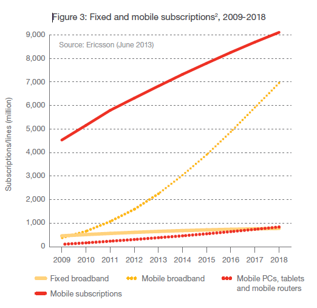

Daripada kajian Ericsson (Ericsson Mobility Report – Jun 2013), trend langganan telefon mudah alih berserta pelan data mengalami kenaikan ekponen.
Dari laporan (graf dibawah) tersebut, sehingga Q1 2013 terdapat langganan talian tetap 6.4b dengan langganan bersama pelan data sebanyak 1.7b, dan dijangka pada 2018 langganan talian tetap pada 9.1b dan bersama pelan data sebanyak 7b.
